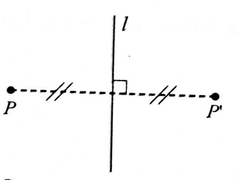
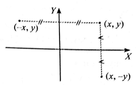
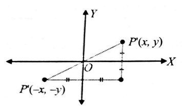
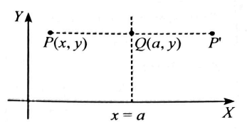
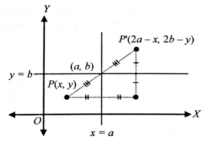
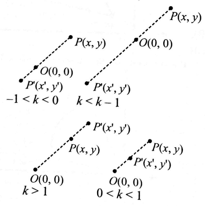
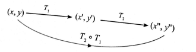
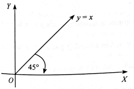

Pernahkah Anda membayangkan bagaimana seorang pembuat game dapat membuat gerakan dan manuver berputar atau mengecil dan membesar dari suatu objek pada layar komputer? Gerakan memutar dan perubahan ukuran objek di atas dapat dilakukan dengan cara melakukan transformasi (perubahan) dari objek asalanya. Geometri transformasi menunjukan bagaimana bangun-bangun berubah kedudukan dan ukurannya menurut aturan tertentu. Beberapa transformasi matematis yang paling umum, yaitu: translasi (pergeseran), rotasi (perputaran), refleksi (pencerminan), dan dilatasi (perbesaran/perkecilan).
Pada pokok bahasan ini akan dipelajari jenis-jenis transformasi seperti di atas beserta sifat-sifatnya, kemudian menentukan aturan komposisi dari dua atau lebih transformasi. Selain itu juga akan digunakan matriks untuk menyajikan suatu transformasi. Karena transformasi yang dibahas adalah transformasi pada bidang dua dimensi, maka matriks yang digunakan adalah matriks persegi berordo 2.
Translasi adalah suatu transformasi yang memetakan tiap titik pada bidang dengan jarak dan arah tertentu. Jarak dan arah tertentu itu dapat diwakili oleh ruas garis berarah (misalnya \(\overrightarrow{AB } \)) atau oleh suatu pasangan terurut \(\begin{pmatrix} a\\b \end{pmatrix}\). Hubungan antara titik dan bayangannya adalah:
Tentukan bayangan titik-titik \(A(3,1), B(-2, 5), C(-4,-3)\), jika ditransformasikan oleh translasi \(T\) yang dinyatakan oleh pasangan bilangan \(\begin{pmatrix}3 \\-2 \end{pmatrix}\)
Penyelesaian : Untuk titik \(A(3,1)\)
\(A'=\begin{pmatrix}3\\1 \end{pmatrix}+\begin{pmatrix} 3 \\ -2\end{pmatrix}=\begin{pmatrix}6\\-1 \end{pmatrix} \), \(A'=(6,-1)\)
Untuk titik \(B(-2,5)\)
\(B'=\begin{pmatrix}-2 \\ 5 \end{pmatrix}+\begin{pmatrix}3 \\ -2 \end{pmatrix}=\begin{pmatrix}1\\3 \end{pmatrix}\), \(B'=(1,3) \)
Untuk titik \(C=(-4, -3) \)
\(C=\begin{pmatrix}-4 \\ -3 \end{pmatrix}+\begin{pmatrix}3 \\ -2 \end{pmatrix}=\begin{pmatrix}-1 \\ -3 \end{pmatrix} \), \(C'=(-1, -3) \)
Tentukanlah peta (bayangan) dari titik-titik \(A(2,5), B(3,-1) \), dan \(C(-3,4)\) oleh translasi berikut:
\(\text{a. }\begin{pmatrix}3\\1 \end{pmatrix}\)
\(\text{b. }\begin{pmatrix}2\\-3 \end{pmatrix} \)
\(\text{c. }\begin{pmatrix}-1\\4 \end{pmatrix}\)
Sudahkah kalian bercermin hari ini? Apabila kalian perhatikan ketika bercermin, kalian melihat bahwa bayangan diri di cermin selalu mempunyai ukuran yang sama dengan diri sendiri. Sama halnya jarak diri ke cermin sama dengan jarak bayangan ke cermin.
Perhatikan gambar berikut

Jika \(P'\) merupakan bayangan titik \(P\) oleh pencerminan terhadap garis \(l\) maka :
Pencerminan terhadap sumbu-x kita notasikan dengan \(T_x\) dan pencerminan terhadap sumbuy dinotasikan dengan \(T_y\)
Dari gambar diatas terlihat bahwa bayangan titik \(x,y\) yang dicerminkan terhadap sumbu-x dan sumbu-y berturut-turut adalah \((x,-y)\) dan \((-x,y)\), dapat ditulis:
\(T_x : (x,y) \to (x,-y) \) dan
Untuk menentukan suatu matriks yang bersesuaian dengan pencerminan sumbu-x, maka lebih dahulu ditulis \(x'\) dan \(y'\) dalam kombinasi \(x\) dan \(y\) seperti terlihat di bawah ini.
\(x'=ax+by\)
\(y'=cx+dy\)
Persamaan di atas dapat ditulis dalam persamaan matriks menjadi:
\(\begin{pmatrix}x' \\ y' \end{pmatrix}=\begin{pmatrix} ax+by \\ cx+dy\end{pmatrix}=\begin{pmatrix}a&b \\ c&d \end{pmatrix}\begin{pmatrix}x\\y \end{pmatrix} \)
Matriks \(\begin{pmatrix}a&b \\ c&d \end{pmatrix}\) disebut matriks yang bersesuaian dengan transformasi diatas.
Seperti yang sudah kita ketahui bahwa bila titik \(P(x,y)\) dicerminkan terhadap sumbu-x, maka bayangannya adalah \(P'(x,-y)\). Dengan demikian, didapat persamaan-persamaan berikut.
\(x'=x=1.x+0.y\)
\(y'=-y=0.x-1.y\)
Persamaan dalam bentuk matriks: \(\begin{pmatrix}x' \\ y' \end{pmatrix}=\begin{pmatrix}1.x+0.y \\ 0.x-1.y \end{pmatrix}=\begin{pmatrix}1&0 \\ 0&-1 \end{pmatrix}\begin{pmatrix}x\\y \end{pmatrix} \)
Jadi, matriks \(\begin{pmatrix}1&0 \\ 0&-1 \end{pmatrix}\) merupakan matriks yang bersesuaian dengan pencerminan terhadap sumbu-x
Dengan cara yang sama diperoleh matriks pencerminan terhadap sumbu-y adalah \(\begin{pmatrix}-1&0 \\ 0&1 \end{pmatrix}\).
Tentukan bayangan titik \(A(3,2)\) dan \(B(-4,-5)\) jika dicerminkan terhadap:
a. sumbu-x
b. sumbu-y
Pencerminan terhadap titik asal \(O(0,0) \) merupakan komposisi dari pencerminan terhadap sumbu-x dan kemudian terhadap sumbuy atau sebaliknya. Perhatikan gambar:

Dari gambar di atas terlihat bahwa bayangan titik \((x,y) \) yang dicerminkan terhadap titik asal \(O(0,0) \) adalah \((-x,-y) \) dapat ditulis:
\(T_O:(x,y) \to (-x,-y) \)
Kita sudah tahu bahwa bila titik \(P(x,y)\) dicerminkan terhadap titik asal, maka bayangannya adalah \(P=(-x,-y) \). Dengan demikian, diperoleh persamaan-persamaan berikut.
\(x'=-x=-1.x+0.y \)
\(y'=-y=0.x-1.y \)
Persamaan dalam bentuk matriks: \(\begin{pmatrix}x' \\ y' \end{pmatrix}=\begin{pmatrix}-1.x+0.y \\ 0.x-1.y \end{pmatrix}=\begin{pmatrix}-1&0 \\ 0&-1 \end{pmatrix}\begin{pmatrix}x\\y \end{pmatrix} \)
Jadi, matriks \(\begin{pmatrix}-1&0 \\ 0&-1 \end{pmatrix} \) merupakan matriks yang bersesuaian dengan pencerminan terhadap titik asal \(O(0,0) \).
Tentukan bayangan titik \(A(-3,2)\) dan \(B(-4,-5)\) jika dicerminkan terhadap titik asal \(O(0,0) \)
JAWABAN
Pencerminan terhadap garis \(x=a\) dinotasikan dengan \(T_{x=a} \) dan pencerminan terhadap garis \(y=b\) dinotasikan dengan \(T_{y=b} \). Perhatikan gambar berikut:

Titik \(Q\) merupakan titik tengah \(PP'\) sehingga:
\(\begin{align}
Q&=\frac{P+P'}{2} \\
(a,y)&=\frac{(x,y)+P'}{2} \\
(2a,2y)&= (x,y)+P' \\
P' &=(2a-x,y)
\end{align}\)
Jika titik \(P(x,y) \) dicerminkan terhadap garis \(x=a\), maka bayangannya adalah \(P'(2a-x,y)\), dapat ditulis:
\(T_{x=a}:P(x,y) \to P'(2a-x,y) \)
Bila dituliskan dalam bentuk matriks diperoleh: \(\begin{pmatrix}x' \\ y' \end{pmatrix}=\begin{pmatrix}2a-x\\y \end{pmatrix} \)
Dengan cara yang sama seperti sebelumnya, bayangan pencerminan terhadap garis \(y=b\) maka akan diperoleh \(T_{y=b}: P(x,y) \to P'(x, 2b-y) \)
Dalam bentuk matriks dapat dituliskan: \(\begin{pmatrix}x'\\y' \end{pmatrix}=\begin{pmatrix}x\\2b-y \end{pmatrix} \)
Pencerminan terhadap titik \((a,b) \) dinotasikan dengan \(T_{(a,b)}\). Pencerminan terhadap titik \((a,b)\) merupakan komposisi dari pencerminan terhadap garis \(x=a\) kemudian garis \(y=b\) atau titik potong antara kedua garis tersebut. Perhatikan gambar berikut.

Titik \((a,b) \) merupakan titik tengah \(PP'\) sehingga:
\(\begin{align}
(a,b)&=\frac{P+P'}{2} \\
(2a,2b)=(x,y)+P' \\
P' &= (2a-x, 2b-y)
\end{align}\)
Jika titik \(P(x,y)\) dicerminkan terhadap titik \((a,b) \), maka bayangannya adalah \(P'(2a-x, 2b-y) \), dapat ditulis:
\(T_{(a,b)}:P(x,y) \to P'(2a-x,2b-y) \)
Bila dituliskan dalam bentuk matriks diperoleh:
\(\begin{pmatrix}x'\\y' \end{pmatrix}=\begin{pmatrix}2a-x\\2b-y \end{pmatrix}\)
Tentukan bayangan titik \(A(-3,2) \) dan \(B(4,-5)\) jika dicermikan terhadap:
Tentukan bayangan titik \(A(4,7) \) dan \(B(2,-5)\) jika dicermikan terhadap:
Tentukan bayangan titik \(P(3,5)\) jika diputar sebesar \(90^{\circ}\) yang berlawanan dengan arah jarum jam dan berpusat titik \(O(0,0)\)
JAWABAN
Karena diputar berlawanan dengan arah jarum jam, maka nilai sudutnya positif.
\(\begin{align}
\begin{pmatrix}x' \\ y' \end{pmatrix}&= \begin{pmatrix}\cos 90^{\circ} & -\sin 90^{\circ} \\ \sin 90^{\circ} & \cos 90^{\circ} \end{pmatrix}\begin{pmatrix}3 \\5 \end{pmatrix} \\ &=\begin{pmatrix}0&-1 \\ 1&0 \end{pmatrix} \begin{pmatrix}3\\5 \end{pmatrix} \\ &= \begin{pmatrix}-5 \\3 \end{pmatrix}
\end{align}\)
Jadi, bayangan titik \(P\) adalah \(P'(-5,3) \).
Tentukan bayangan titik \(P(2,6)\) jika diputar sebesar \(30^{\circ}\) yang searah dengan arah jarum jam dan berpusat titik \(O(0,0)\)
JAWABAN
Karena searah dengan arah jarum jam, maka nilai sudutnya negatif.
\(\begin{align}
\begin{pmatrix}x' \\ y' \end{pmatrix}&= \begin{pmatrix}\cos (-30^{\circ}) & -\sin (-30^{\circ}) \\ \sin (-30^{\circ}) & \cos (-30^{\circ}) \end{pmatrix}\begin{pmatrix}2\\6 \end{pmatrix} \\ &=\begin{pmatrix} \frac{1}{2}\sqrt{3} & \frac{1}{2} \\ -\frac{1}{2} & \frac{1}{2}\sqrt{3} \end{pmatrix} \begin{pmatrix}2\\6 \end{pmatrix} \\ &= \begin{pmatrix}\sqrt{3}+3 \\ -1+3\sqrt{3} \end{pmatrix}
\end{align}\)
Jadi, bayangan titik \(P\) adalah \(P'(\sqrt{3}+3, -1+3\sqrt{3}) \).
Untuk mendapatkan rumusan rotasi dengan titik pusat \(a,b\), terlebih dahulu kita translasikan titik (\(a,b)\) ke pusat \(O(0,0)\) dan titik \((x,y)\) ditranslasi \(\begin{pmatrix}-a\\-b \end{pmatrix} \), karena kita telah menemukan rumusan rotasi dengan pusat \( O(0,0)\). Perhatikan gambar berikut:
Tentukan bayangan titik \(A(3,2)\) jika diputar sebesar \(90^{\circ}\) dengan arah berlawanan arah jarum jam dan berpusat titik \((4,1))\).
JAWABAN
Dilatasi adalah transformasi yang mengubah jarak titik-titik dengan faktor skala (pengali) tertentu di pusat dilatasi tertentu. Jika yang didilatasikan adalah suatu bangun, maka ukuran bangun tersebut akan berubah, tetapi bentuknya tetap. Kita akan mempelajari perkalian atau dilatasi ditentukan oleh titik pusat \(O(0, 0)\) dan titik pusat \((a, b)\) faktor skala. \([O, k]\) adalah notasi dilatasi yang berpusat \(O(0, 0)\) dengan faktor skala \(k\) sedangkan \([(a, b),k]\), adalah notasi dilatasi yang berpusat di titik \((a, b)\) dengan faktor skala \(k\).

Jika \(P'\) merupakan bayangan \(P\) oleh dilatasi \([O,k] \), maka:
\(OP'=k.OP\)
Jadi, bayangan titik \(P(x,y)\) oleh dilatasi \([O,k]\) adalah \(P'(kx,ky) \) dan dapat juga ditulis sebagai:
$$P(x,y) \overset{[O,k]}{\rightarrow} P'(kx,ky)$$
Kita sudah ketahui bahwa bila titik \(P(x,y)\)didilatasikan terhadap titik pusat \(O(0, 0)\) dengan faktor skala \(k\), maka bayangannya adalah \(P'(kx,ky)\). Dengan demikian, diperoleh persamaan-persamaan berikut.
\(x'=kx=kx+0.y \)
\(y'=ky=0.x+ky\)
Persamaan dalam bentuk matriks
\(\begin{align}
\begin{pmatrix}x'\\y' \end{pmatrix}&=\begin{pmatrix}kx+0.y \\0.x+ky \end{pmatrix} \\ &=\begin{pmatrix}k&0 \\0&k \end{pmatrix}\begin{pmatrix}x\\y \end{pmatrix}
\end{align}\)
Jadi, matriks \(\begin{pmatrix}k&0 \\ 0&k \end{pmatrix}\) merupakan matriks yang bersesuaian dengan dilatasi terhadap titik pusat \(O(0,0)\) dengan faktor skala \(k\).
Tentukan bayangan titik-titik \(A(2,3)\), \(B(3,-1)\), dan \(A(4,2)\) oleh dilatasi \([O,2]\)
JAWABAN
Matriks dari ketiga titik tersebut adalah \(\begin{pmatrix}2&3&4 \\ 3&-1&2 \end{pmatrix}\).
Bayangan titiknya
Dilatasi merupakan transformasi non-isometri sehingga akan mengubah ukuran suatu bangun datar. Dalam bentuk umumnya, jika matriks transformasi \(\begin{pmatrix}a&b \\ c&d \end{pmatrix} \) memetakan bangun \(B\) ke bangun \(B'\), maka:
Luas bangun \(B'=\begin{vmatrix}a&b \\ c&d \end{vmatrix} \times \text{luas bangun }B\)
Diketahui koordinat titik-titik sudut \(\bigtriangleup ABC\) adalah\(A(1,0) \), \(B(3,0) \), dan \(C(3,3) \). Jika bayangan titik-titik \(A\), \(B\), dan \(C\) oleh dilatasi pusat \(O(0,0)\) dengan faktor skala 4 adalah \(A'\), \(B'\) dan \(C'\), tentukan:
a. luas \(\bigtriangleup ABC\)
b. luas \(\bigtriangleup A'B'C'\)
\(\begin{align} L_{\bigtriangleup ABC} &=\frac{1}{2}\times \text{alas} \times \text{tinggi}\\&= \frac{1}{2} \times 2 \times 3 \\ &=3 \end{align}\)
Matriks dilatasinya adalah \(\begin{pmatrix}4&0 \\ 0&4 \end{pmatrix}\)
\(\begin{align} L_{\bigtriangleup A'B'C'}&= \begin{vmatrix}4&0 \\ 0&4 \end{vmatrix} \times L_{\bigtriangleup ABC}\\&=(16-0) \times 3 \\ &= 48 \end{align}\)
Segitiga \(ABC\) dengan \(A(2,1)\), \(B(6,1)\), dan \(C(6,4)\) ditransformasikan dengan matriks transformasi \(\begin{pmatrix}3&2 \\ 1&2 \end{pmatrix}\).
Tentukan luas hasil transformasi segitiga \(ABC\).
Berdasarkan gambar di samping:
\(\begin{align} L_{\bigtriangleup ABC} &=\frac{1}{2}\times \text{alas} \times \text{tinggi}\\&= \frac{1}{2} \times 4 \times 3 \\ &=6 \end{align}\)
Jadi, luas hasil transformasi \(\bigtriangleup ABC\) adalah
\(\begin{align} L_{\bigtriangleup A'B'C'}&= \begin{vmatrix}3&2 \\ 1&2 \end{vmatrix} \times L_{\bigtriangleup ABC}\\&=(6-2) \times 6 \\ &= 24 \end{align}\)
Sama halnya dengan mendapatkan rumusan rotasi dengan titik pusat \((a,b)\), dilatasi dengan titik pusat \((a,b)\) terlebih dahulu kita translasikan titik \((a,b)\) ke pusat \(O(0,0)\) dan titik \((x,y)\) ditranslasi \(\begin{pmatrix}-a\\-b \end{pmatrix} \), karena kita telah menemukan rumusan dilatasi dengan pusat \(O(0,0)\), maka pada rumus berpusat \((0,0)\), setiap \(x\) diganti menjadi \((x-a)\) dan setiap \(y\) diganti menjadi \((y-b)\). Dengan demikian rumus untuk dilatasi \([(a,b),k] \) adalah:
\(x'-a=k(x-a) \)
\(y'-b=k(y-b) \)
Persamaan dalam bentuk matriksnya:
Tentukan bayangan titik-titik \(A(3,5)\) oleh dilatasi \([(2,1),-2] \).
JAWABAN
\(\begin{align}
A' &= \begin{pmatrix}-2&0 \\ 0&-2 \end{pmatrix}\begin{pmatrix}3-2 \\ 5-1 \end{pmatrix}+\begin{pmatrix}2\\1 \end{pmatrix} \\ &= \begin{pmatrix}-2&0 \\ 0&-2 \end{pmatrix}\begin{pmatrix}1\\4 \end{pmatrix}+\begin{pmatrix}2\\1 \end{pmatrix} \\
&=\begin{pmatrix}-2\\-8 \end{pmatrix}+\begin{pmatrix}2\\1 \end{pmatrix} \\ &= \begin{pmatrix}0\\-7 \end{pmatrix}
\end{align}\)
Jadi, bayangan titik \(A(3,5)\) adalah \(A'(0,-7)\).
Sebelumnya kita hanya mempelajari cara menentukan transformasi suatu titik, sekarang kita akan menentukan transformasi suatu kurva. Jika ingin mencari bayangan suatu kurva yang memiliki persamaan \(y=f(x) \) oleh suatu transfromasi, maka dari transformasi tersebut lebih dahulu kita tentukan \(x\) dan \(y\) dalam bentuk \(x'\) dan \(y'\), kemudian bayangannya diperoleh dengan mensubstitusikan \(x\) dan \(y\) ke \(y=f(x)\) dari transformasi tersebut.
Tentukan bayangan garis \(2x+3y+4=0 \) jika ditransformasikan dengan \(\begin{pmatrix}1&2 \\ 0&1 \end{pmatrix} \)
JAWABAN
Menentukan \(x\) dan \(y\)
\(\begin{align}
\begin{pmatrix}x'\\y' \end{pmatrix}
&= \begin{pmatrix}1&2 \\ 0&1 \end{pmatrix}\begin{pmatrix}x\\y \end{pmatrix}
\\\begin{pmatrix}x\\y \end{pmatrix} &=\begin{pmatrix}1&2 \\ 0&1 \end{pmatrix}^{-1}\begin{pmatrix}x'\\y' \end{pmatrix}
\\ &= \frac{1}{1-0}\begin{pmatrix}1&-2\\0&1 \end{pmatrix}\begin{pmatrix}x'\\y' \end{pmatrix} \\&=
\begin{pmatrix}x'-2y' \\y' \end{pmatrix}
\end{align}\)
Diperoleh \(x=x'-2y' \) dan \(y=y'\)
Substitusikan \(x=x'-2y'\) dan \(y=y'\) ke persamaan \(2x+3y+4=0\), maka:
\(\begin{align}
2(x'-2y')+3y'+4&=0 \\
2x'-4y'+3y'+4 &= 0 \\
2x'-y'+4 &= 0
\end{align}\)
(tanda petik satu merupakan tanda dari bayangannya)
Jadi, bayangan garis \(2x+3y+4=0 \) adalah \(2x-y+4=0\)
Garis \(2x-3y=6 \) ditranslasikan dengan \(T=\begin{pmatrix} 3\\-2\end{pmatrix}\), Tentukan persamaan bayangannya.
JAWABAN
Ada 2 cara untuk menyelesaikan soal ini.
Cara 1
Bayangan garis \(2x-3y=6 \) oleh translasi \(T=\begin{pmatrix} 3\\-2\end{pmatrix}\) adalah
\(\begin{align}
2(x-3)-3(y-(-2)) &=6 \\
2(x-3)-3(y+2) &=6 \\
2x-6-3y-6 &= 6 \\
2x-3y &=18
\end{align}\)
Cara 2
Terlebih dahulu kita tentukan 2 buah titik yang terletak pada garis \(2x-3y=6\). Untuk memudahkan kita pilih titik potong sumbu-X dan sumbu-Y.
\(y=0 \Rightarrow x=3 \), diperoleh titik \(A(3,0)\)
\(x=0 \Rightarrow y=-2 \), diperoleh titik \(B(0,-2) \)
Matriks kedua titik tersebut adalah \(\begin{pmatrix}3&0\\0&-2 \end{pmatrix}\)
Matriks titik bayangannya adalah
Tentukan hasil pencerminan kurva \(y=x^2 -2x+4 \) oleh pencerminan terhadap garis \(y=x\)
JAWABAN
Menentukan \(x\) dan \(y\)
\(\begin{pmatrix}x'\\y' \end{pmatrix}
= \begin{pmatrix}0&1 \\ 1&0 \end{pmatrix}\begin{pmatrix}x\\y \end{pmatrix} \Leftrightarrow \begin{pmatrix}x'\\y' \end{pmatrix} =\begin{pmatrix}y \\x \end{pmatrix}\)
Dari persamaan diatas diperoleh:
\(x=y'\) dan \(y=x'\)
Substitusikan \(x=y'\) dan \(y=x'\) ke persamaan \(y=x^2 -2x+4 \), maka \(x'=(y')^2 -2y'+4 \)
Jadi, bayangan kurva \(y=x^2 -2x+4 \) adalah \(x=y^2-2y+4 \)
Tentukan hasil pencerminan kurva \(y=5-x-3x^2 \) oleh pencerminan terhadap garis \(y=-x\)
JAWABAN
Menentukan \(x\) dan \(y\)
\(\begin{pmatrix}x'\\y' \end{pmatrix}
= \begin{pmatrix}0&-1 \\ -1&0 \end{pmatrix}\begin{pmatrix}x\\y \end{pmatrix} \Leftrightarrow \begin{pmatrix}x'\\y' \end{pmatrix} =\begin{pmatrix}-y \\-x \end{pmatrix}\)
Dari persamaan diatas diperoleh:
\(x=-y'\) dan \(y=-x'\)
Substitusikan \(x=-y'\) dan \(y=-x'\) ke persamaan \(y=5-x-3x^2\), maka
\(\begin{align} -x'&=5-(-y')-3(-y')^2 \\
-x' &= 5+y'-3(y')^2 \\ x &= 3(y')^2-y'-5 \end{align} \)
Jadi, bayangan kurva \(y=5-x-3x^2 \) adalah \(x=3y^2 -y-5 \)
Tentukan bayangan parabola \(y=x^2-x+2 \) jika diputar sebesar \(90^{\circ}\) dengan arah berlawanan dengan arah putar jarum jam terhadap titik \(O\).
JAWABAN
Menentukan \(x\) dan \(y\)
\(\begin{pmatrix}x'\\y' \end{pmatrix}
= \begin{pmatrix}0&-1 \\ 1&0 \end{pmatrix}\begin{pmatrix}x\\y \end{pmatrix} =\begin{pmatrix}-y \\x \end{pmatrix}\)
Dari persamaan diatas diperoleh:
\(x=y'\) dan \(y=-x'\)
Substitusikan \(x=y'\) dan \(y=-x'\) ke persamaan \(y=x^2-x+2\), maka
\(\begin{align} -x'&=(y')^2-y'+2 \\
x' &= -(y')^2+y'-2 \end{align} \)
Jadi, bayangan kurva \(y=x^2-x+2 \) adalah \(x=-y^2+y-2\)
Tentukan bayangan parabola \(y=x^2-2x+2 \) jika diputar sebesar \(90^{\circ}\) dengan arah berlawanan dengan arah putar jarum jam terhadap titik \((1,-2) \).
JAWABAN
Menentukan \(x\) dan \(y\)
Tentukan bayangan kurva \(x^2+y^2=16\) oleh dilatasi \([O,4]\)
JAWABAN
Menentukan \(x\) dan \(y\)
\(\begin{pmatrix}x'\\y' \end{pmatrix}
= \begin{pmatrix}4&0 \\ 0&4 \end{pmatrix}\begin{pmatrix}x\\y \end{pmatrix} =\begin{pmatrix}4x \\4y \end{pmatrix}\)
Dari persamaan matriks diatas diperoleh:
\(x'=4x \Rightarrow x=\frac{1}{4}x' \)
\(y'=4y \Rightarrow y=\frac{1}{4}y' \)
Substitusikan \(x=\frac{1}{4}x'\) dan \(y=\frac{1}{4}y'\) ke \(x^2+y^2=16\) diperoleh:
\(\begin{align}
(\frac{1}{4}x')^2+(\frac{1}{4}y')^2 &=16 \\
\frac{1}{16}(x')^2+ \frac{1}{16}(y')^2 &= 16 \\
(x')^2+(y')^2 &=256
\end{align} \)
Jadi, bayangannya adalah \(x^2 + y^2 =256\)
Tentukan bayangan parabola \(y=x^2-2x+2 \) jika didilatasi terhadap titik (-1,2) dengan faktor skala 2.
JAWABAN
Menentukan \(x\) dan \(y\)
Materi yang berkaitan materi kali ini adalah komposisi dua fungsi, yaitu \(f \circ g (x)\) artinya sama dengan \(f(g(x))\). Arti komposisi pada fungsi dan pada transformasi adalah sama, sehingga \(T_2 \circ T_1
(x,y)=T_2(T_1(x,y)) \) artinya \(T_2 \circ T_1 \) artinya \(T_1\) dilanjutkan oleh \(T_2\) seperti terlihat pada skema dibawah ini.

Agar dapat memahami komposisi lebih jauh, perhatikan beberapa contoh soal berikut.
Tentukan bayangan titik \(A(2,3)\) jika ditransformasikan dengan \(T_1=\begin{pmatrix} 2 \\ -1 \end{pmatrix}\), kemudian dilanjutkan oleh translasi \(T_2 = \begin{pmatrix} 1\\ 4\end{pmatrix}\).
JAWABAN:
Karena \(T_2\) yang melanjutkan, maka pada penulisan komposisi, \(T_2\) berada disebelah kiri.
\(\begin{align} T_2 \circ T_1 (2,3) &= T_2(T_1(2,3)) \\ &= T_2(2+2, 3-1) \\ &=T_2 (4,2) \\&= (4+1, 2+4) \\ &=(5,6) \end{align}\)
Jadi, bayangan titik \(A(2,3)\) adalah \(A'(5,6)\)
Tentukan bayangan titik \(P(1,4)\) jika dicerminkan terhadap garis \(x=3\), kemudian dicerminakan terhadap garis \(y=x\)
JAWABAN:
Karena yang melanjutkan adalah pencerminan terhadap garis y=x, maka \(T_{y=x} \) berada di sebelah kiri.
\(\begin{align}
T_{y=x} \circ T_{x=3}(1,4) &= T_{y=x}[T_{x=2}(1,4)] \\
&= T_{y=x}(2(3)-1,4) \\ &= T_{y=x}(5,4) \\ &=(4,5)
\end{align}\)
Jadi, bayangan titik \(P(1,4)\) adalah \(P'(4,5)\).
Diketahui translasi \(T_1 = \begin{pmatrix}1\\1 \end{pmatrix} \) dan \( \begin{pmatrix}2\\2 \end{pmatrix}\). Nyatakan \(T_1 \circ T_2 \) sebagai translasi tunggal, kemudian carilah \(T_1 \circ T_2 = (3,-1). \)
JAWABAN:
\(T_2 \circ T_1 = T_1+T_2=\begin{pmatrix}1\\1 \end{pmatrix}+\begin{pmatrix}2\\2 \end{pmatrix}=\begin{pmatrix}3\\3 \end{pmatrix}\)
\(T_2 \circ T_1(3,-1)=(3+3, -1+3)=(6,2) \)
Tentukan bayangan titik \(P(3,4)\) jika dicerminkan terhadap garis \(x=1\), kemudian dilanjutkan pada pencerninan terhadap garis \(x=4\).
JAWABAN:
Karena yang melanjutkan adalah pencerminan terhadap garis \(x=4\), maka \(T_{x=4}\) ditulis disebelah kiri
\(\begin{align} T_{x=4} \circ T_{x=1}&=\begin{pmatrix}2(4-1) \\0 \end{pmatrix} \\ &=\begin{pmatrix}6 \\0 \end{pmatrix} \end{align}\)
\(\begin{align} T_{x=4} \circ T_{x=1} &= \begin{pmatrix} 6\\0 \end{pmatrix} \\ (3,4) \to (3+6, 4+0) &=(9,4) \end{align}\)
Jadi, bayangan titik \(P(3,4)\) adalah \(P'(9,4)\).
Tentukan bayangan titik \(P(2,1)\) pada pencerminan berturut-turut terhadap garis \(y=5\) yang kemudian diteruskan pada pencerminan terhadap garis \(y=3\)
JAWABAN:
Karena yang melanjutkan adalah pencerminan terhadap garis \(y=3\), maka \(T_{y=3}\) ditulis disebelah kiri
\(\begin{align} T_{y=3} \circ T_{y=5}&=\begin{pmatrix}0 \\2(3-5) \end{pmatrix} \\ &=\begin{pmatrix} 0\\-4 \end{pmatrix} \end{align}\)
\(\begin{align} T_{y=3} \circ T_{y=5} &= \begin{pmatrix} 0\\-4 \end{pmatrix} \\ (2,1) \to (2+0, 1-4) &=(2,-3) \end{align}\)
Jadi, bayangan titik \(P(2,1)\) adalah \(P'(2,-3)\).
Tentukan bayangan titik \(P(2,4)\) jika diputar berturut-turut \(30^{\circ}\) dan \(60^{\circ} \) dengan pusat \(O\)
JAWABAN:
\(R_{60^{\circ}} \circ R_{30^{\circ}}=R_{90^{\circ}}:(2,4) \to (x',y') \) dengan :
\(\begin{align}
x'&=2 \cos 90^{\circ}-4 \sin 90^{\circ}\\ &= 2.0-4.1 \\&=-4
\end{align}\)
\(\begin{align}
y'&=2 \sin 90^{\circ} + 4 \cos 90^{\circ}\\ &=2.1 + 4.0 \\ &= 2
\end{align}\)
Jadi, bayangan titik \(P(2,4)\) adalah \(P'(-4,2)\).
Jika \(T_X\) menyatakan pencerminan terhadap sumbu-X dan \(T_{y=x}\) menyatakan pencerminan terhadap garis \(y=x\). Tentukan transformasi tunggal yang ekuivalen dengan \(T_X \circ T_{y=x} \)
JAWABAN:
Titik potong sumbu-X dan garis \(y=x\) adalah \(O\). Sudut yang dibentuk \(45^{\circ}\). Karena yang pertama adalah pencerminan terhadap garis \(y = x\), berarti arah sudut dari garis \(y=x\) ke sumbu-X adalah arah negatif, dengan demikian:

\(T_X \circ T_{y=x}=R_{O,2(45^{\circ})}=R_{90^{\circ}} \)
Jika \(\alpha =90^{\circ} \) (kedua garis saling tegak lurus), maka \(T_{g_{2}} \circ T_{g_{1}}=R_{P, 180^{\circ}}=T_{(a,b)} \)
Tentukan bayangan titik \(A(3,6)\) jika dicerminkan terhadap garis \(x=5\) yang kemudian dilanjutkan pada pencerminan terhadap garis \(y=2\)
JAWABAN:
Karena garis \(x=5\) dan \(y=2\) berpotongan dititik \((5,2)\) secara tegak lurus, maka:
\(\begin{align}
T_{y=2} \circ T_{x=5} &=T(5,2) : (3,6) \\ &= (2.5 -3, 2.2-6) \\&= (7,-2)
\end{align}\)
Jadi, bayangan titik \(A(3,6)\) adalah \(A'(7,-2)\)
Tentukan bayangan titik \(A(5,4)\) jika dicerminkan terhadap garis \(y=2x-4\) yang kemudian dilanjutkan pada pencerminan terhadap garis \(y=-\frac{1}{2}x+1\)
JAWABAN:
Kedua garis saling tegak lurus dan berpotongan di titik \((2,0)\), dengan demikian:
\(\begin{align}
T_{y=-\frac{1}{2}x+1} \circ T_{y=2x-4} &=T(2,0) : (5,4) \\ &= (2(2)-5, 2(0)-4) \\&= (-1,-4)
\end{align}\)
Jadi, bayangan titik \(A(5,4)\) adalah \(A'(-1,-4)\)